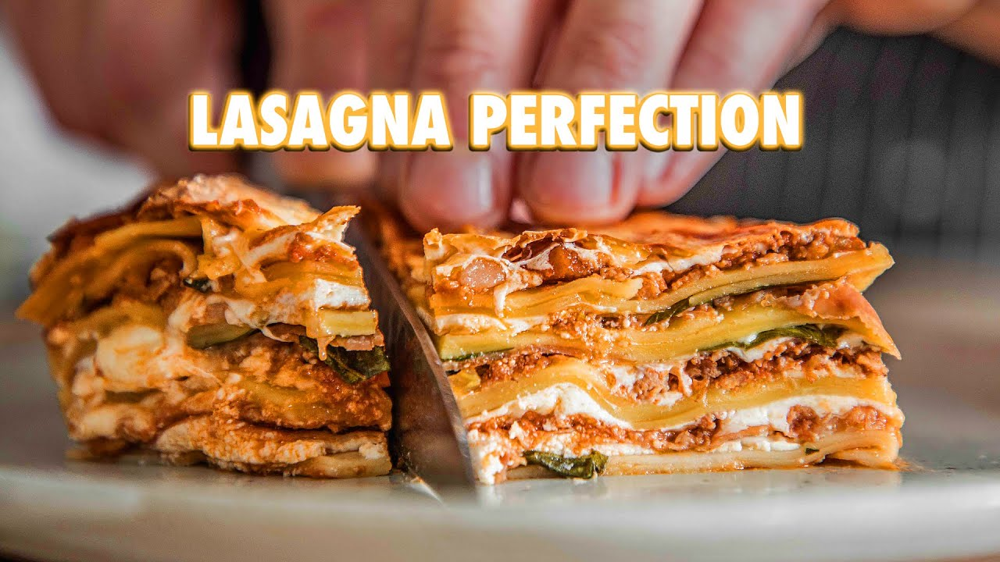

Lasagna Recipe
Description:
Homemade lasagna with fresh out of the box pasta, fresh ground meat (ground at home), homemade sauce that will make you cry (in a good way).
Homemade lasagna with fresh out of the box pasta, fresh ground meat (ground at home), homemade sauce that will make you cry (in a good way).